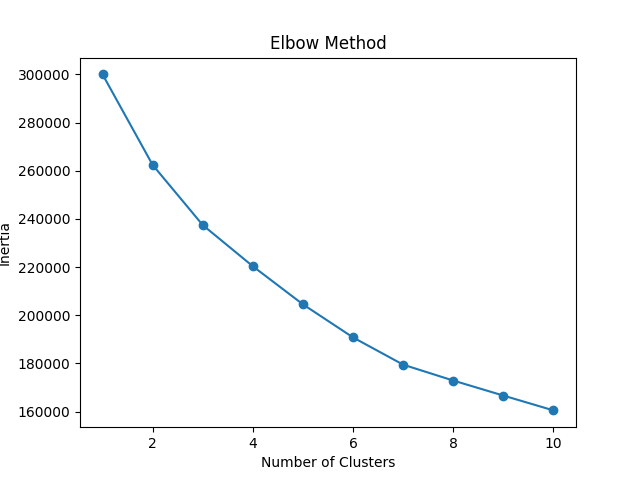
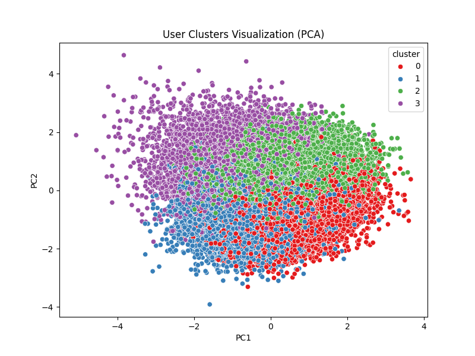
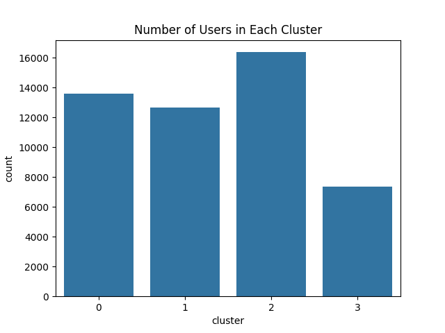
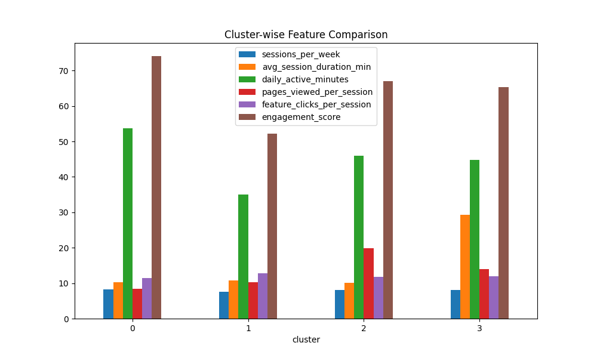

MACHINE LEARNING • UNSUPERVISED LEARNING
App User Behaviour
Segmentation
A user segmentation project that applies K-Means clustering to identify distinct app user behaviour patterns based on engagement and activity metrics.
01. Overview
This project focuses on understanding different types of app users by analyzing their engagement and usage behaviour.
Instead of predicting a predefined target, the project uses unsupervised machine learning to discover natural user groups within the dataset.
02. Problem Statement
App users do not interact with an application in the same way. Some users may be highly engaged, while others may have lower activity or different usage patterns.
The objective of this project is to identify meaningful user segments based on their behavioural characteristics and use those segments to support targeted business strategies.
03. Behavioural Features
The clustering analysis uses the following behavioural features:
Sessions per Week
Measures how frequently users access the application during a week.
Average Session Duration
Represents the average amount of time spent during a session.
Daily Active Minutes
Measures the user's daily activity within the application.
Pages Viewed per Session
Represents the amount of content explored during a session.
Feature Clicks per Session
Measures interaction with application features.
Engagement Score
Represents the overall engagement level of the user.
04. Data Preparation
The behavioural features were prepared for clustering so that the different measurements could be compared appropriately during the machine learning process.
05. Elbow Method
The Elbow Method was used to examine different numbers of clusters by comparing the within-cluster variation.
The analysis was used to select a suitable number of clusters for the user segmentation process.

06. K-Means Clustering
K-Means clustering was applied to group users with similar behavioural characteristics.
Select cluster centroids.
Assign users to the nearest cluster.
Recalculate cluster centroids.
Continue until the clusters stabilize.
07. Cluster Profiles
The resulting clusters represent different patterns of user behaviour.
Highly Engaged Users
This cluster shows the highest engagement score among the identified groups.
Lower Activity Users
This cluster has the lowest engagement score and lower daily active minutes.
Large User Segment
This is the largest user group and shows the highest pages viewed per session.
Long-Session Users
This is the smallest group and has the highest average session duration.
08. PCA Visualization
Principal Component Analysis was used to reduce the behavioural feature space to two dimensions for visualizing the identified user clusters.

09. Business Insights
The identified user segments can support different engagement and retention strategies.
Cluster 0
Focus on loyalty initiatives, premium engagement and maintaining strong user interaction.
Cluster 1
Use re-engagement and retention campaigns to encourage increased activity.
Cluster 2
Promote feature discovery and personalized recommendations based on content exploration.
Cluster 3
Focus on long-session engagement and feature optimization.
10. Cluster Analysis
The analysis compares cluster size and behavioural characteristics to understand how the identified groups differ.


11. Technologies
12. Project Links
Explore the project source code and related interactive work.